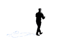
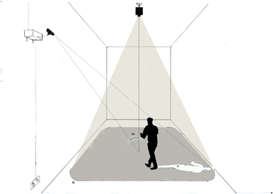
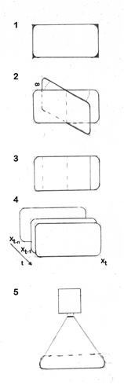

Damià Vives i Joan Llobera
Ombres de llum. 2011
Instal·lació. Mides
variables.
Aquesta
obra ha estat realitzada a partir del projecte Foc creuat organitzat per la Societat
Catalana de Biologia i exposat a l’Arts
Santa Mònica. Joan Duran ha escrit un article sobre el projecte a Omnis
Cel·lula.
Ombres
de llum tradueix a l’entorn expositiu els
elements d’un experiment de realitat virtual. En aquest camp de recerca
s’empren sensors, projectors i certes relacions de perspectiva entre ells per provocar
reaccions reals a partir d'estímuls audiovisuals generats, en última instància,
per l'activitat dels propis participants.
Per
exemple, si emprem un casc de realitat virtual, en mirar el nostre cos podem
veure’l reemplaçat per un cos virtual que es mou igual que nosaltres però té
una aparença diferent. Aquestes eines permeten estudiar les bases neurals de la
representació corporal.
Per
tal de traduir aquesta idea als materials propis d’una exposició, hem decidit
jugar amb les ombres, una part del “cos” que podem representar senzillament.
Hem substituit els sensors per una càmera web i el casc de realitat virtual per
un projector.
Això
ens permet mostrar de forma estilitzada els elements d’un experiment. Primer,
estímuls que reaccionen a l’espectador i que el representen d’una forma
alterada. Segon, mesures objectives de l’efecte que produeix aquesta
representació.
Si
es tractàs d’un experiment, hauríem de demostrar que el participant “s’apropia”
de l’ombra virtual: quantificaríem estadísticament els canvis comportamentals
provocats per la visió de la pròpia ombra distorsionada a partir de la
informació de la càmera web i ho relacionaríem amb qüestionaris o una
entrevista post experimental. Com que es tracta d’un treball artístic, mostrem
un testimoni de la “vida” de la instal·lació: l’espectador pot veure un
registre de l’activitat capturada cada dia de l’exposició.

L’esquema de processat consisteix
en:
1) Capturar la imatge des de la
posició de la web cam, i fer una màscara per a recollir només els canvis en la
zona de projecció que s’emprarà.
2) Rotar la imatge en un angle
equivalent a l’angle entre la web cam i el projector. Això permet projectar des
del projector la imatge com es veuria des del punt de vista de la web cam.
3) Per a cada píxel, restar el valor
present del valor passat. Això dóna un valor del moviment vist des de la
perspectiva de la web cam. Aquest pas permet capturar el moviment de l’escena,
i a més cancel·larà l’efecte que pugui tenir el context (canvis de llum, etc.).
4) En els llocs on no hi ha canvis es
posa el valor negre. On es detecten canvis per primer cop es projecta un color
determinat; en els que es detecta per segon cop es torna a posar el valor
negre. Això fa que en el punt cec de la web cam -és a dir, el que correspondria
a l’ombra del personatge des del punt de vista de la web cam- acabi pintada,
gràcies al moviment del participant, d'un color arbitrari.
5) Si es
desitja, es poden afegir textures en funció d’altres paràmetres del moviment.
Aquí el criteri és únicament estètic.
La implementació ha estat fet en Processing. El codi font de la instal·lació es
pot descarregar aquí